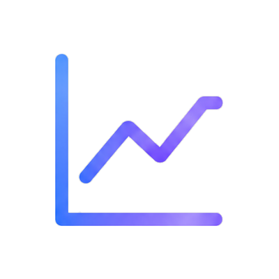

采购响应
26h
供应商急需物资全流程闭环，比原计划提前 38 小时。
以多 Agent 协同架构，打通采购、过磅、BIM、财务与企业微信协同，让工程管理从人工经验驱动升级为数据智能驱动。
26h
供应商急需物资全流程闭环，比原计划提前 38 小时。
2.1%
智能比价与资金链推荐，项目采购成本可控。
月→天
轮月度核算升级为日账监控，利润风险提前预警。
40%
材料计划准确率提升，减少停工待料与库存积压。
计划与现场脱节，进度滞后，无法及时预警。
材料需求不明、浪费严重，损耗与积压并存。
成本核算滞后，超支风险难以及时发现。
跨部门信息不通，流程漫长，执行效率低下。

项目、合同、材料、设备、财务与现场数据统一治理。

异常识别、趋势预测、成本预警和风险评分持续运行。
按需分配、调用能力，为最适合的 Agent 执行任务。
采购、财务、过磅、BIM、协同流程一体化闭环。
全链路可追溯、实时合规，资金与经营管理升级。
项目总服务面积约 15 万㎡，正处于主体结构施工高峰期，对钢筋等主材的供应要求很高。
Pmagic AI 建工管理矩阵 OS 通过多 Agent 协同，快速完成紧急供货任务，保障现场施工不断档。